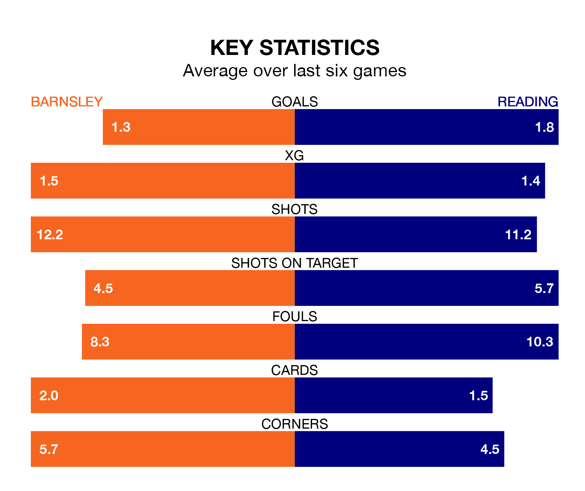

Barnsley host Reading on Saturday at Oakwell in EFL League One.
In their last league match, on Tuesday, Barnsley lost to Stevenage 2-1 away, with their goal scored by Adam Phillips.
Reading won, 2-0 away at Bristol Rovers, with Lewis Wing and Sam Smith on the scoresheet.
With 75 goals in 42 games so far this season, Barnsley are the league's third-highest scorers with 1.8 goals per game. And they are conceding at an average rate, letting in 55 goals at a rate of 1.3 per game.
Reading are also above average scorers, with 1.4 goals per game, compared to a league average of 1.3. They have conceded 1.5 goals per game.
In the last 10 years, Barnsley and Reading have played each other on 11 occasions. Barnsley won one of them, Reading five, and they drew five times.
On average, the Tykes scored 0.7 goals and the Royals 1.4 in those matches.
Their last meeting was on December 9, when Barnsley won 3-1 away.
The Tykes are fifth in the table after 42 games, of which they have won 21 and drawn 11, earning 74 points.
The Royals are eight places behind the hosts in 13th, with 15 wins and 10 draws putting them on 55 points.
In Devante Cole, Barnsley have one of the league's sharpest shooters so far this season. He has notched 17 goals in 42 appearances, to sit fourth in the scoring charts.
His goal rate of one every 192 minutes is quicker than that of Sam Smith, the away team's top scorer with a goal every 217 minutes, and a total of 12 goals in 31 games.
Barnsley are in mixed form in EFL League One, with two wins and a draw from their last six games.
With three wins and a draw over that period, Reading's form is better – they have taken 10 points from 18, compared to the Tykes's seven.
Saturday's match will be refereed by Seb Stockbridge, who has taken charge of eight EFL League One games so far this season, issuing one red card and booking 38 players. He has awarded five penalties.
The last Barnsley game Stockbridge refereed was a 1-1 home draw with Wigan Athletic on January 1. He is yet to oversee a match featuring Reading this season.
Updated: 10:01 (UTC), 12/04/24